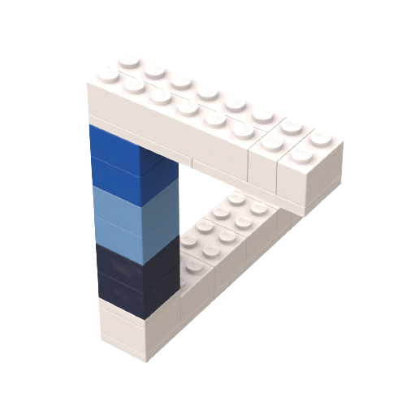
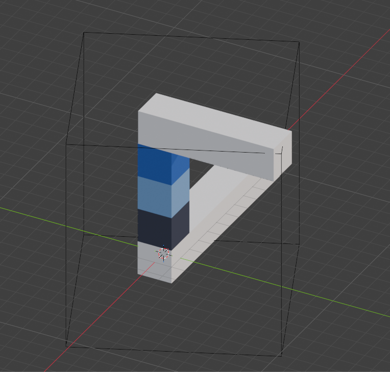

絵が描けない人間が、3DCGソフトblenderに挑戦してみる（２）
前回のあらすじ：絵は描けないが、blenderならできるかも？ と思い立った田村。初心者向けの教本を終えて「もうちょっと無骨なやつがやりたい」「自分の本の挿絵を作りたい」と思い至る。 ◇ ◇ ◇ 今日は、前回のコラムで勢いをつけて書いた部分――「どうして自分の本の挿絵をblenderで作りたいと思ったのか」――をより丁寧に書くところからはじめよう。 わたしは新しいことを始めるのが好きだ。新しい技術を習得して、下手の横好きだとしても、なんとなく自分で出来るようになると嬉しい。 色々と新しいことをやってくると、コツを掴んでくる。わたしはその中でも特に「適切な目標設定をする」ことが大事だと思う。目標設定が適切だと、マイルストーンの置き方がよくなる。自分をちょっとずつ刺激し、無理している感覚をなるべく減らして新しいことを習得しやすくなる。自分が何を学ぼうとしているのか、何をしているのか迷いづらい。だから、わたしは「とにかく手を動かして勉強をしてみる」よりも「一回立ち止まって、自分が何のためにこれを学びたいのか考える」という作業が好きだ。 blenderの学習の場合だと「何を作りたいか？」という問いが目標設定にあたる。 わたしは、blenderで制作された他の方の作品をたくさん見た。アニメーション・Vtuberのからだ・リアリティな街・ゲームの舞台になるような建物の中など、blenderで作れるもののジャンルは多岐にわたる。人によってはアニメーションムービーを作っているかたもいるらしい。すごいことだ。 でも、わたしが作りたいのはそういうものではなかった。強いていうなら、リミナルスペースやBackroomsのような静謐でちょっと不気味な、ナードな建築物を作りたいと思った。でも、それが作れるようになるにはかなりの労力が必要そうだ。 もっと簡単で、わたしに近しいもの―― それを考えて、思いついた。「わたしのアイコンを作ろう」と。
わたしが数年前から自分のアイコンとして使っている、ペンローズの三角形風のアイコンである。青と白で構成されており、シンプルな形だ。 何より、これはもともとわたしがレゴで作ったものだった。手で作れるものなので、デジタルでも立方体を重ねて作れば同じようなものが再現できると思う。 これは実用的だし、何より作りたいと思った！ ペンローズの三角形をぐるぐる回して、この三角形が錯視図形であるところも見てもらったらよりおもしろい。 そして、せっかく回すのであれば、それを紙の本を手に取った人にも感じてもらいたい。たとえば、小学生のときに自由帳の隅に描いたパラパラ漫画みたいに、わたしのアイコンをぐるぐる回したら？ わたしは子どもの頃の本にパラパラ漫画が配置されていると、それを何度も何度も試して遊ぶのが止まらなかった。そんなものを作りたい。作りたい！ と自分の中の小学生が叫んでいるのを感じた。 というわけで、わたしの目標は、「わたし（田村）のアイコン・ペンローズの三角形を作り、アニメーションで回すこと」ということになった。 幸い、わたしのアイコンのモデリングは非常に簡単で、これは15分くらいで終わった。それは基本操作を前回学んでいたからだ。やはり基礎を固めるのは大事だ。
なかなか良さそうではないか。それでは、これを回転させてみよう。 ……それが大変だった。 次回（3）に続く！